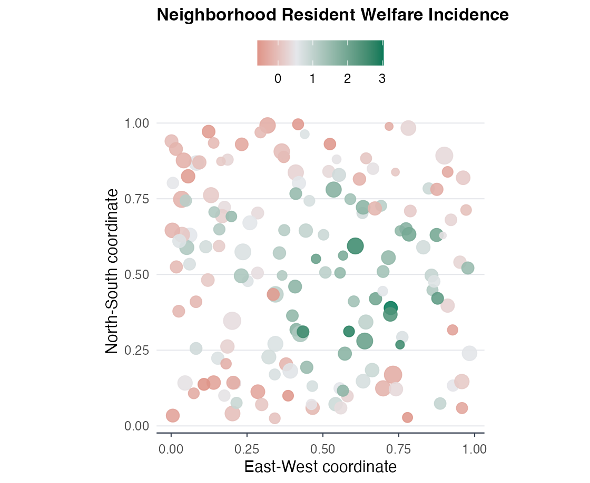
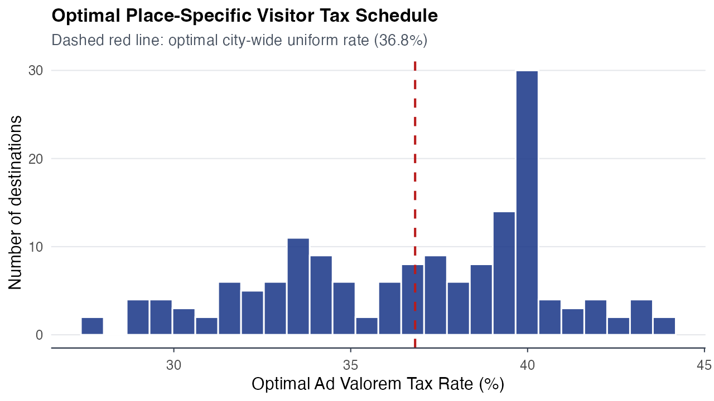

Extensions, Nonlinear QSM & Optimal Spatial Taxes
1. Shift-Share Network Identification
When shocks follow a shift-share structure $h_{it} = \sum_g \pi_{ig} g_{gt}$ (e.g. visitor origin shares
$\times$ seasonal travel shifts), non-random destination exposure propagates through $(I - M)^{-1}$.
Passing shifter_expectations in build_exposures(..., design = "shift_share")
propagates expected shifts through $(I - M)^{-1}$ following Borusyak and Hull (2023), and
rotemberg_weights() / loo_influence() report shock-level relevance weights and
leave-one-hub-out jackknife stability.
2. Robustness Extensions (Section 5.2)
-
Shopping Amenity / Congestion Residuals (
add_shopping_wedge()): Inverts $\widehat{\Delta}^D_{it} / (1 - \sigma)$ to separate monetary producer price growth $\widehat{p}_{it}^{\mathrm{prod}}$ from perceived shopping quality/crowding wedges $\widehat{\zeta}_{it}$. -
Workplace Mobility Le Chatelier Rules (
add_workplace_mobility()): Solves linearized workplace labor market clearing under Fréchet sorting elasticity $\varepsilon$ and perfect city-wide mobility ($\varepsilon \to \infty$). -
Finite-Change Welfare Bounds (
add_finite_bounds()): Evaluates exact finite-change consumer Laspeyres, CES, and Paasche bounds alongside C++ bounded-variable least-squares (cpp_bvls_box) producer-concave feasibility projections.
3. Nonlinear QSM & Adjoint Ramsey Spatial Taxation
solve_qsm() and optimal_spatial_tax() calibrate a two-sector open-city nonlinear
QSM directly to acct and $\widehat{\boldsymbol{\kappa}}^S$. Under ad valorem visitor tax
$\tau_i = e^{\theta_i} - 1$ rebated lump-sum to city residents ($T = R / \Omega$), the C++ solver computes
exact equilibrium prices via damped Newton and evaluates the analytical adjoint welfare gradient:
where $\mathcal{E} = -\mathrm{d}\log \mathbf{E}^T / \mathrm{d}\boldsymbol{\theta}'$ is the general-equilibrium
tax-base elasticity matrix. At the interior optimum, optimal_spatial_tax() decomposes each
neighborhood’s optimal rate into four economic channels: (1) own inverse-elasticity markup,
(2) own resident incidence, (3) cross-neighborhood resident spillovers, and (4) cross-base fiscal spillovers.

plot(welf, type = "map"): Spatial distribution of resident welfare gains across neighborhoods.
plot(tax, type = "distribution"): Optimal place-specific visitor tax rates vs. optimal city-wide uniform rate.